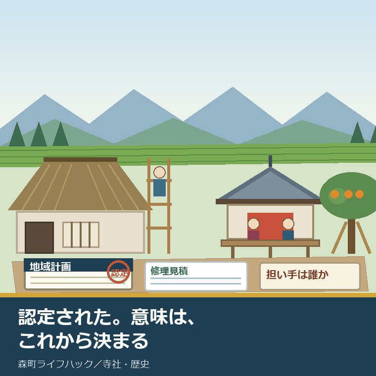
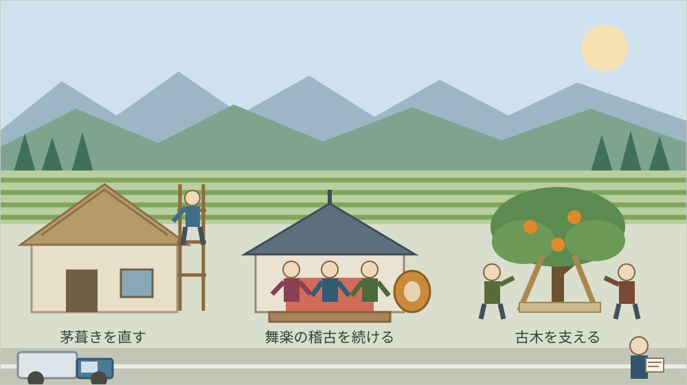
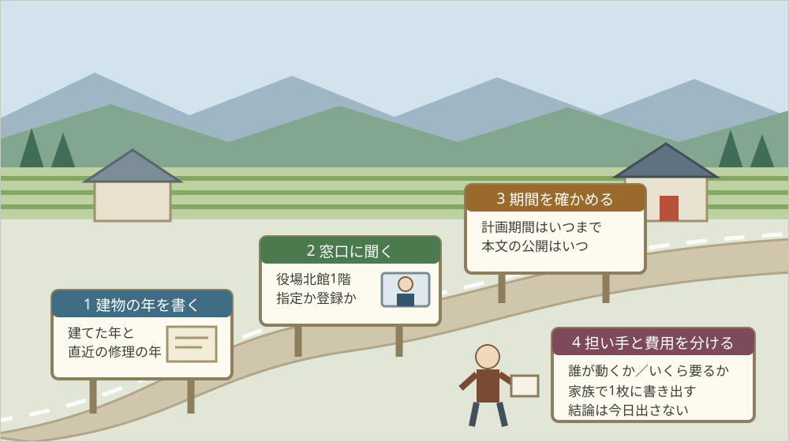

森町文化財保存活用地域計画、2026年7月認定で何が変わる

この記事の要点
Q. 静岡県森町の文化財保存活用地域計画が認定されたと聞きました。うちは古い家と社寺の隣の土地を持っています。何か手続きが増えるのでしょうか。
A. 所有者側の義務は増えません。文化庁によれば認定は令和8年7月17日で、同日時点の認定は全国253自治体、静岡県内は16市町です。変わるのは町の側の権限で、文化財保護法により森町教育委員会が国へ登録を提案でき、支援団体を指定できます。まず社会教育課文化振興係（0538-85-1114）へ、自分の建物が対象かを聞いてください。
静岡県周智郡森町（遠州森町）で、社寺の隣に土地を持っている。あるいは、江戸期からの家屋をそのまま引き継いでいる。この記事は、そういう立場の方に向けて書いています。
2026年7月、森町の文化財保存活用地域計画が文化庁に認定されました。町の広報でこの言葉を見て、「で、うちに何か関係あるのか」と思った方が多いはずです。
結論から書きます。認定によって、所有者の手続きが増えることはありません。増えるのは、町の教育委員会が使える手段のほうです。
ただし、それは「何も起きない」という意味ではありません。使える手段が増えたのは町の側で、その手段を動かす引き金を引けるのは、多くの場合、所有者からの相談です。
この記事では、文化庁の一覧、森町公式の説明、文化財保護法の条文から確認できたことを並べ、そこから所有者が今日できる確認を組み立てます。修理費と担い手の不安がこの認定で解けるのかどうかも、正直に書きます。
公式情報から確定できること
まず、2026年8月19日時点で文化庁、森町公式サイト、文化財保護法の条文から確認できた事実を並べます。出典は記事の末尾に載せています。
一つ目。認定日が確定しています。文化庁の「各地方公共団体が作成した『文化財保存活用地域計画』」の一覧には、静岡県の欄に「森町」「森町文化財保存活用地域計画」「令和8年7月17日」と記載されています。
二つ目。全国の数字が示されています。同じページの冒頭には「令和8年7月17日現在で、253自治体の文化財保存活用地域計画が認定されています」と書かれています。一覧の見出しも「『文化財保存活用地域計画』認定市町村一覧（令和8年7月17日現在）」です。
三つ目。同じ日に認定されたのは森町だけではありません。同一覧で認定日が令和8年7月17日の自治体を数えると19自治体あり、静岡県からは湖西市と森町の2つが入っています。
四つ目。ここが、私がいちばん驚いた数字です。同一覧の253自治体を市区町村名の末尾で分けると、「町」または「村」で終わるのは44自治体にとどまります。残りはすべて市です。この制度は、実質的に市の制度として広がってきました。
五つ目。同日認定の19自治体のうち、町は3つだけです。同一覧によれば、福島県三春町、群馬県長野原町、そして静岡県森町です。
六つ目。静岡県内の状況も一覧から読めます。同一覧に載る静岡県内の認定は16市町で、そのうち町は小山町（令和5年12月15日認定）と森町（令和8年7月17日認定）の2つです。
七つ目。森町に隣接する市は、すべて先に認定を受けています。同一覧によれば、浜松市と磐田市が令和3年7月16日、袋井市が令和4年12月16日、掛川市が令和6年7月19日です。森町は、周りが出そろってから入った形になります。
八つ目。計画の法的な位置づけは町が説明しています。森町公式の「森町文化財保存活用地域計画（案）パブリックコメントについて」のページには、「本計画は『文化財保護法』第183条の3に基づく法定計画として、『静岡県文化財保存活用大綱』を勘案して作成するもので、『森町総合計画』の分野別計画に位置づけます。」と書かれています。
九つ目。同ページには目的も書かれています。森町公式によれば、「森町では地域の歴史文化資産を保存・活用するため、『森町文化財保存活用地域計画』の策定を進めています。」とされ、「関連計画と連携・整合し、森町の文化財全般の保存と活用について総合的な方針や取組を定めるもの」と説明されています。ページの更新日は2026年7月16日です。
十番目。住民の意見を聞く期間はすでに終わっています。同ページによれば、意見の募集期間は令和7年11月28日（金曜日）から令和7年12月12日（金曜日）までで、閲覧場所は森町役場北館（森町森92-1）1階、閲覧時間は8時30分から17時15分とされていました。
十一番目。そして、計画の本文は今も読めません。同ページには「森町文化財保存活用地域計画（案）の公開は終了しました。」とあり、意見の結果公表については「※本計画認定後、公表予定」と書かれています。私が2026年8月19日に確認した時点で、町公式に計画本文は見当たりませんでした。
十二番目。ここから法律です。計画に何を書くかが決まっています。文化財保護法第183条の3第2項は、記載する事項として「基本的な方針」「当該市町村が講ずる措置の内容」「文化財を把握するための調査に関する事項」「計画期間」その他を挙げています。
十三番目。作るときの手続きも条文にあります。同条第3項は、市町村の教育委員会は「あらかじめ、公聴会の開催その他の住民の意見を反映させるために必要な措置を講ずるよう努める」とともに、地方文化財保護審議会の意見を聴かなければならないと定めています。
十四番目。認定の基準は三つです。同条第5項は、計画の実施が「当該市町村の区域における文化財の保存及び活用に寄与するものであると認められること」、「円滑かつ確実に実施されると見込まれるものであること」、大綱に照らし適切であることの三つに適合するときに認定すると定めています。
十五番目。ここが所有者にとって最も具体的な変化です。文化財保護法第183条の5は、認定を受けた市町村の教育委員会が、認定文化財保存活用地域計画の計画期間内に限り、区域内の文化財で登録が適当と思料するものについて、文部科学大臣に対し文化財登録原簿への登録を提案することができると定めています。
十六番目。その提案にも手順があります。同条第2項は、提案の前に地方文化財保護審議会の意見を聴かなければならないと定め、第3項は、登録しないこととしたときはその旨と理由を教育委員会に通知しなければならないとしています。
十七番目。許可の窓口が動く可能性もあります。文化財保護法第184条の2第1項は、重要文化財の現状変更等の許可（第43条）などに関する文化庁長官の権限に属する事務を、計画期間内に限り、政令で定めるところにより、認定市町村の教育委員会が行うこととすることができると定めています。
十八番目。担い手についての条文もあります。文化財保護法第192条の2第1項は、市町村の教育委員会が、業務を適正かつ確実に行えると認められる団体をその申請により「文化財保存活用支援団体」として指定することができると定めています。
十九番目。支援団体の仕事は五つ挙げられています。同法第192条の3は、文化財の保存及び活用を行うこと、事業を行う者への情報提供や相談その他の援助、「文化財の所有者の求めに応じ、当該文化財の管理、修理又は復旧その他その保存及び活用のため必要な措置につき委託を受けること」、調査研究、その他必要な業務を挙げています。
二十番目。支援団体から町へ働きかける道もあります。同法第192条の6は、支援団体が市町村の教育委員会に対し計画の作成または変更を提案することができると定め、認定市町村に対しては登録の提案をするよう要請することができるとしています。
二十一番目。関係者が集まる場も用意されています。同法第183条の9は協議会について定め、その構成員として市町村、都道府県、指定された支援団体に加えて「文化財の所有者、学識経験者、商工関係団体、観光関係団体その他の市町村の教育委員会が必要と認める者」を挙げています。
二十二番目。森町の指定文化財の内訳も公表されています。森町公式の「文化財」のページによれば、国指定は建造物の友田家住宅1件と、民俗の小國神社十二段舞楽・天宮神社十二段舞楽・山名神社天王祭舞楽の3件で、いずれも所在地と指定日が表に載っています。
二十三番目。県指定は13件が表になっています。同ページによれば、工芸5件（賀茂神社・自得院・天宮神社の鰐口、太刀無銘、短刀銘遠州住友安）、絵画書跡2件、天然記念物2件（次郎柿原木、天宮神社のナギ）、建造物3件（天宮神社本殿及び拝殿、友田家（隠居屋）住宅、山名神社本殿附棟礼）、民俗1件（小國神社の田遊び）です。
二十四番目。ただし、この一覧には注意が要ります。同ページの更新日は2019年3月1日で、出典は「もりまち町政要覧2001森町データファイル（別冊統計資料）より」と明記されており、町指定文化財は掲載されていません。
二十五番目。担い手の実例も、同じページに載っています。森町公式によれば、次郎柿原木は「平成7年に幹の空洞化が発見され」、「平成16年春、原木を枯らしてはならないと、有志の声に賛同する町民がこぞって保存会を結成し」、森町治郎柿原木保存会（森町商工会内、電話0538-85-3126）が年間管理を続けています。

この絵で描きたかったのは、制度の側と現場の側が別々に動いているという点です。計画は役場でつくられ、認定は文化庁で出ます。けれども、傷んだ屋根の下に立つのは、いつも所有者と地元の人です。
森町での暮らしに置き換えると、この認定は何を意味するか
ここからは、確認した事実を実際の場面に置き換えて考えます。ここからは私の見方が混じります。事実と分けて読んでください。
正直に言えば、認定そのものには、まだ意味がありません。意味は、この先に所有者と町がこれを使うかどうかで決まります。認定された日に、傷んだ屋根が直るわけではないからです。
それでも、意味の芽は三つあります。登録の提案、許可の窓口、支援団体の指定です。いずれも法律に条文があり、計画期間内に限って使えるものです。
一つ目の芽は、登録の提案です。これまで、自分の家を登録有形文化財にしたいと思っても、所有者からの働きかけの筋道は分かりにくいものでした。認定後は、町の教育委員会が国へ提案する道が条文上あります。
二つ目の芽は、許可の窓口です。重要文化財の現状変更には従来から許可が要りますが、その事務を町の教育委員会が行える余地が生まれました。ただし条文は「政令で定めるところにより」「できる」であって、自動的に移るものではありません。
三つ目の芽は、支援団体の指定です。森町にはすでに、治郎柿原木保存会のように、有志が集まって年間管理を担っている実例があります。こうした団体が指定を受ければ、所有者から管理や修理の委託を受ける立場が法律上はっきりします。
ここで、森町の地理を思い出してください。社寺も古民家も、多くは山あいの集落にあります。亀久保も、天宮も、飯田も、一宮も、町の中心部から車で走る場所です。
修理の話になると、費用の前に人の話が出てきます。足場を組める職人、茅を葺ける職人、社殿の彫刻を扱える職人が、近くに何人いるか。私が相談を受ける範囲でも、ここが最初の壁になります。
後継の話も続きます。建物を継ぐ人と、行事を担う人が、同じ家にいるとは限りません。建物だけ残って担い手が抜けた例も、担い手はいるのに建物が先に傷んだ例も、どちらもあります。
認定は、この二つの壁を直接には崩しません。崩す道具をどこに置くか、置き場所を決めたのが今回の計画だと私は理解しています。
良い点
この認定について、私が良いと考える点を三つ挙げます。順番に理由を書きます。
一つ目。町が単独で判断できる範囲が、条文の形で増えたことです。これまで町ができることは、指定と補助の運用が中心でした。登録の提案という入口が加わると、まだ指定も登録もされていない建物に光が当たる可能性が出ます。
二つ目。担い手を制度の内側に置く枠ができたことです。文化財保護法第192条の3は、支援団体が所有者の求めに応じて管理や修理の委託を受けることを、業務として明記しています。有志の善意に頼る形から、契約の形へ移す足場になります。
三つ目。計画期間という区切りがあることです。第183条の5も第184条の2も、効力は計画期間内に限られます。期限があるということは、その間に何をどこまでやったかが後から数えられるということです。私はこれを良い点として数えます。
付け加えると、森町がこの制度に入ったこと自体の意味も小さくありません。認定253自治体のうち町村は44。職員数の少ない自治体ほど、計画をつくる事務量そのものが重いはずです。そこを通した点は、素直に評価します。
注文したい点
その上で、一つの事業者として注文したい点も三つあります。批判ではなく、現場から見て足りないと感じる情報の話です。
一つ目。計画の本文が読めません。森町公式のパブリックコメントのページには「森町文化財保存活用地域計画（案）の公開は終了しました。」とあり、結果の公表は「※本計画認定後、公表予定」と書かれたままです。認定から1か月が過ぎた2026年8月19日時点で、本文も意見の結果も町公式に見当たりません。
二つ目。計画期間が公表資料から確認できません。第183条の5も第184条の2も「計画期間内に限り」と書かれているのに、その期間が何年度から何年度までかを、私は町公式でも文化庁の一覧でも見つけられませんでした。期間が分からないと、所有者は動く時期を決められません。
三つ目。所有者が最初に触れる案内が見当たりません。森町公式の「文化財」のページは更新日が2019年3月1日で、出典も2001年の町政要覧です。認定という新しい出来事と、所有者が最初に開くページが、つながっていません。
加えて、これは注文というより疑問です。支援団体の指定が森町で行われるのか、行われるとして担い手をどこから出すのか、私には見当がついていません。治郎柿原木保存会のような形が社寺や古民家にも広がるのか、そこは資料からは読めませんでした。

この図で示したかったのは、順番を逆にしないことです。制度を全部理解してから窓口へ行こうとすると、たいてい行かないまま年が変わります。
対案・結論
では、今日できることを書きます。社寺や古い家屋、その隣接地を持っている方が、今日のうちに終えられる範囲に絞ります。
まず、紙を1枚用意して、建物の建築年と直近の修理年を書いてください。正確でなくてかまいません。「昭和のはじめ」「祖父の代に屋根を葺き替えた」で十分です。
次に、その紙に、今いちばん傷んでいる場所を1つだけ書きます。屋根、土台、雨樋、塀。複数書かないでください。1つに絞ると、次の相談が具体的になります。
それから、森町役場の社会教育課文化振興係（電話0538-85-1114）へ、建物の所在地を伝えて二つだけ聞いてください。「この建物は指定や登録の対象に入っているか」「計画の本文はいつ公開されるか」の二つです。
この電話が、今日できる小さな一歩です。制度を理解してからでなくてよく、修理を決めていなくてもかまいません。所在地と築年だけ言えれば会話は始まります。
その上で、結論は出さないでください。直すか、手放すか、そのままにするか。今日の成果は、判断材料が一つ増えたことだけで十分です。
家族に残す記録
相談を受けていて、いちばん惜しいと思うのは、親の代が知っていたことが誰にも渡らないまま消えることです。文化財に関わる建物では、これが特に起こります。
残す項目を挙げます。建物の所在地、地番、建築年、構造、屋根の葺き材、直近の修理年と施工した業者名。業者名は、次の修理で必ず効きます。
続いて、土地のほうを書きます。地目、地積、境内地や隣接地との境界の杭の有無、接する道路の幅。足場を積んだトラックが入れる道かどうかは、見積りを大きく動かします。
あわせて、人を書きます。行事を担っている組や講の名前、代表の連絡先、年間に何回集まるか。建物より先に、この記録のほうが失われます。
最後に、今日の日付と、確認に使った資料の名前を書いてください。制度も担当係も変わります。いつ時点の話かが分かる記録だけが、来年も使えます。
大石の視点
ここからは、私の考えです。公表された事実とは分けて読んでください。
私は磐田市で小さな不動産の仕事をしていて、実家をどうするか決めていない方の相談を一件ずつ受けています。森町には、この仕事の目で見ても余白があると思っています。
同時に、このままでは続かないとも思っています。屋根の職人も、太鼓を打つ人も、柿の木を支える人も、みな同じ町の同じ層から出ています。負担が一部の家に寄っているのは、外から見ていても分かります。
だから私は、今回の認定を「町が何かをしてくれる話」として読んでいません。所有者の側から声を出したときに、町が使える道具が増えた、という話として読んでいます。
ここには、私の商売の実感も混じっています。制度は知っている人だけが得をする。それが一番よくないと私は思っています。だからこの記事では、条文の番号まで書きました。
森町の文化財そのものについては友田家住宅、次郎柿原木、三つの舞楽の記事に、指定区分ごとの整理は史跡・名勝・天然記念物を確認日で整理する記事に書きました。社寺の隣に土地を持つ場合の注意は国指定の舞楽が三件ある町で社寺の隣に土地を持つ記事に、建物の年代の読み方は森町の寺院を宗派から見る記事にまとめてあります。
実家の名義、境界、農地、道路まで含めて順に整理したい方は、ふじがおか実家カルテの森町相談窓口もご利用ください。売ると決めていなくても使える整理の道具として作っています。
まとめ
- 文化庁の一覧によれば「森町文化財保存活用地域計画」の認定日は令和8年7月17日（2026年8月19日確認）
- 同一覧には「令和8年7月17日現在で、253自治体の文化財保存活用地域計画が認定されています」と明記
- 同一覧で認定日が令和8年7月17日の自治体は19、静岡県からは湖西市と森町の2つ
- 同一覧の253自治体のうち市区町村名が「町」「村」で終わるのは44自治体
- 同一覧の静岡県内の認定は16市町で、うち町は小山町（令和5年12月15日）と森町（令和8年7月17日）
- 同一覧によれば浜松市と磐田市は令和3年7月16日、袋井市は令和4年12月16日、掛川市は令和6年7月19日に認定済み
- 森町公式によれば、本計画は「文化財保護法」第183条の3に基づく法定計画で、「静岡県文化財保存活用大綱」を勘案し、「森町総合計画」の分野別計画に位置づけられる
- 森町公式によれば、意見の募集期間は令和7年11月28日から令和7年12月12日で、結果の公表は「※本計画認定後、公表予定」
- 文化財保護法第183条の3第2項は、計画に基本的な方針、講ずる措置の内容、調査に関する事項、計画期間などを記載するものと定めている
- 文化財保護法第183条の5は、認定市町村の教育委員会が計画期間内に限り、文部科学大臣に文化財登録原簿への登録を提案できると定めている
- 文化財保護法第184条の2第1項は、重要文化財の現状変更等の許可などの事務を、計画期間内に限り政令で定めるところにより認定市町村の教育委員会が行うこととできると定めている
- 文化財保護法第192条の2第1項は、市町村の教育委員会が申請により文化財保存活用支援団体を指定できると定めている
- 文化財保護法第192条の3は、支援団体の業務に「文化財の所有者の求めに応じ、当該文化財の管理、修理又は復旧その他その保存及び活用のため必要な措置につき委託を受けること」を含めている
- 森町公式「文化財」によれば、国指定は建造物1件（友田家住宅）と民俗3件（小國神社十二段舞楽、天宮神社十二段舞楽、山名神社天王祭舞楽）、県指定は13件（更新日2019年3月1日、町指定は不掲載）
- 問い合わせ先は森町役場社会教育課文化振興係（〒437-0215 静岡県周智郡森町森92-1、電話0538-85-1114）
よくある質問
Q1. 森町文化財保存活用地域計画が認定されると、社寺や古い家屋の所有者に新しい義務が生まれますか。
A1. 文化財保護法の条文からは、認定によって所有者に新しい義務が生まれる仕組みは確認できません。第183条の5、第184条の2、第192条の2はいずれも市町村の教育委員会の側にできることを増やす規定です。指定や登録を受けた文化財の現状変更の手続きそのものは従来どおりです。
Q2. 認定されたのに、森町の公式サイトで計画の本文が読めないのはなぜですか。
A2. 森町公式のパブリックコメントのページには「森町文化財保存活用地域計画（案）の公開は終了しました。」とあり、意見の結果公表は「※本計画認定後、公表予定」と書かれています。2026年8月19日時点で本文は町公式に見当たりません。社会教育課文化振興係（0538-85-1114）へ公開時期を確認してください。
Q3. うちの建物が計画に載っているかどうかは、どこで分かりますか。
A3. 森町公式の文化財のページには国指定4件と県指定13件が名称と所在地つきで載っていますが、更新日は2019年3月1日で町指定は掲載されていません。計画に載る文化財の範囲は本文が公開されるまで確認できないため、社会教育課文化振興係へ建物の所在地を伝えて照会するのが確実です。
最後に一つだけ。ここに書いた認定日、件数、条文、窓口は、いずれも2026年8月19日時点で公表されている内容です。森町文化財保存活用地域計画の計画期間、計画本文の公開時期、パブリックコメントの結果、支援団体の指定の有無、第184条の2による事務の移譲が森町で行われるかどうか、町指定文化財の件数は、公表資料からは確認できていません。動く前に、必ず森町役場社会教育課文化振興係へご確認ください。
参考にした公式情報
- 各地方公共団体が作成した「文化財保存活用地域計画」／文化庁（一覧の見出しが「『文化財保存活用地域計画』認定市町村一覧（令和8年7月17日現在）」であること、「令和8年7月17日現在で、253自治体の文化財保存活用地域計画が認定されています」と明記されていること、静岡県の欄に「森町」「森町文化財保存活用地域計画」「令和8年7月17日」と記載されていること、認定日が令和8年7月17日の自治体が19であり静岡県からは湖西市と森町が入っていること、253自治体のうち市区町村名が「町」「村」で終わるのが44であること、静岡県内の認定が16市町で町は小山町（令和5年12月15日）と森町の2つであること、浜松市と磐田市が令和3年7月16日、袋井市が令和4年12月16日、掛川市が令和6年7月19日に認定されていることを2026年8月19日に確認）
- 森町文化財保存活用地域計画（案）パブリックコメントについて／静岡県森町（「森町では地域の歴史文化資産を保存・活用するため、『森町文化財保存活用地域計画』の策定を進めています。」とされていること、「本計画は『文化財保護法』第183条の3に基づく法定計画として、『静岡県文化財保存活用大綱』を勘案して作成するもので、『森町総合計画』の分野別計画に位置づけます。」と説明されていること、意見の募集期間が令和7年11月28日（金曜日）から令和7年12月12日（金曜日）であったこと、閲覧場所が森町役場北館（森町森92-1）1階で閲覧時間が8時30分から17時15分であったこと、「森町文化財保存活用地域計画（案）の公開は終了しました。」とされていること、結果の公表が「※本計画認定後、公表予定」と書かれていること、担当が社会教育課文化振興係（〒437-0215 静岡県周智郡森町森92-1、電話0538-85-1114）であることを2026年8月19日に確認。ページ更新日 2026年7月16日）
- 文化財／静岡県森町（出典が「もりまち町政要覧2001森町データファイル(別冊統計資料)より」と明記されていること、国指定文化財が建造物の友田家住宅（森町亀久保、昭和48年6月2日指定）と民俗の小國神社十二段舞楽・天宮神社十二段舞楽・山名神社天王祭舞楽（いずれも昭和57年1月14日指定）であること、県指定文化財が工芸5件・絵画書跡2件・天然記念物2件・建造物3件・民俗1件の計13件であること、天然記念物に次郎柿原木と天宮神社のナギが含まれること、建造物に天宮神社本殿及び拝殿・友田家（隠居屋）住宅・山名神社本殿附棟礼が含まれること、次郎柿原木について「平成7年に幹の空洞化が発見され」「平成16年春、原木を枯らしてはならないと、有志の声に賛同する町民がこぞって保存会を結成し」と記されていること、森町治郎柿原木保存会の事務局が森町商工会内（電話0538-85-3126）であること、町指定文化財が掲載されていないことを2026年8月19日に確認。ページ更新日 2019年3月1日）
- 町の計画・取り組み／静岡県森町（一覧に「森町文化財保存活用地域計画（案）パブリックコメントについて（終了しました）」が掲載されていること、森町空家等対策計画、森町耐震改修促進計画、森町景観計画、第9次森町総合計画などが同じ一覧に並んでいること、2026年8月19日時点で計画本文そのものへのリンクが見当たらないことを2026年8月19日に確認）
- 文化財保護法（昭和二十五年法律第二百十四号）／e-Gov法令検索（第183条の3第1項が市町村の教育委員会による文化財保存活用地域計画の作成と文化庁長官への認定申請を定めていること、同条第2項が記載事項として基本的な方針・講ずる措置の内容・把握するための調査に関する事項・計画期間などを挙げていること、同条第3項が「あらかじめ、公聴会の開催その他の住民の意見を反映させるために必要な措置を講ずるよう努める」ことと地方文化財保護審議会の意見聴取を定めていること、同条第5項が認定の基準を三つ定めていること、第183条の5が認定市町村の教育委員会は計画期間内に限り文部科学大臣に文化財登録原簿への登録を提案できると定めていること、第184条の2第1項が第43条の現状変更等の許可などの事務を計画期間内に限り政令で定めるところにより認定市町村の教育委員会が行うこととできると定めていること、第192条の2第1項が文化財保存活用支援団体の指定を定めていること、第192条の3が支援団体の業務に「文化財の所有者の求めに応じ、当該文化財の管理、修理又は復旧その他その保存及び活用のため必要な措置につき委託を受けること」を含めていること、第192条の6が支援団体による計画作成の提案と登録提案の要請を定めていること、第183条の9が協議会の構成員に「文化財の所有者、学識経験者、商工関係団体、観光関係団体その他の市町村の教育委員会が必要と認める者」を挙げていることを2026年8月19日に確認）
- 「文化財保存活用地域計画」について／文化庁（文化財保存活用地域計画が「当該市町村における文化財の保存・活用に関するマスタープラン兼アクションプランです」と説明されていることを2026年8月19日に確認）

最終確認日：2026-08-19 ／ 本記事は公表情報と執筆者の見解を分けて記載しています。森町文化財保存活用地域計画の計画期間、計画本文の公開時期、パブリックコメントの結果、文化財保存活用支援団体の指定の有無、第184条の2による事務の移譲が森町で行われるかどうか、町指定文化財の件数は公表資料から確認できていません。動く前に、必ず森町役場社会教育課文化振興係へご確認ください。